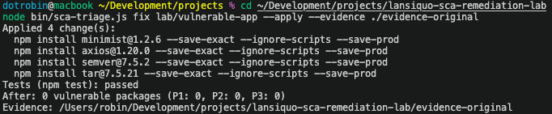
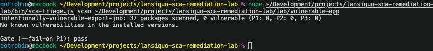
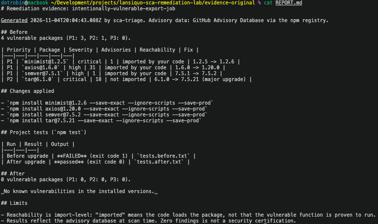

sca-triage
I built sca-triage, an npm SCA scanner that ranks vulnerabilities by whether your code loads the vulnerable package, then applies upgrades, checks them with your project’s tests and saves a before-and-after report. This lab follows one application from four flagged dependencies to a clean rescan, with the terminal evidence at each step.
Version 1.0. The tool runs locally and as a GitHub Action. The demo replays a recorded run; the screenshots below are from the real CLI.
The problem
Finding a vulnerable dependency is only the first step. I wanted a workflow that explains which findings deserve attention, proposes concrete upgrades, runs the application’s tests and checks the resulting dependency tree.
sca-triage is a command-line tool and reusable GitHub Action for npm projects. I tested it on intentionally-vulnerable-export-job. This small local app parses export options with minimist, checks client versions with semver and imports axios through its notification code. It also installs tar without importing it, giving the scanner a useful contrast between advisory severity and import evidence.
The app deliberately pins four vulnerable dependency versions. The captured output and screenshots below document the local workflow: the initial findings, the applied changes and a separate scan afterward. The final workflow step shows the generated before-and-after report.
Scan, fix, rescan
-
Establish the vulnerable baseline
3 P1 · 1 P2The first scan checks 33 packages and flags four vulnerable dependencies.
minimist,axiosandsemverare P1 because they combine high or critical advisories with imports found in the application’s source.tarhas critical advisories but ranks P2 because the tool finds no import of it.Baseline scan outputPreview: captured command and summary · 33 packages · 4 vulnerable dependencies
otrobin@macbook ~/Development/projects/sca-triage % node ~/Development/projects/sca-triage/bin/sca-triage.js scan ~/Development/projects/sca-triage/lab/vulnerable-app --json --fail-on none { "project": "intentionally-vulnerable-export-job", "scannedAt": "2026-11-04T20:01:36.329Z", "packagesScanned": 33, "summary": { "P1": 3, "P2": 1, "P3": 0, "advisories": 51 },Show moreShow lessAll 4 findings and 51 advisories
The captured JSON continues below. The opening command and summary remain above, with no omitted or repeated output.
"findings": [ { "package": "minimist", "version": "1.2.5", "path": "node_modules/minimist", "direct": true, "devOnly": false, "via": [ "minimist" ], "reachability": "imported", "evidence": [ "src/export-job.js:7" ], "severity": "critical", "priority": "P1", "advisories": [ { "ghsa": "GHSA-xvch-5gv4-984h", "title": "Prototype Pollution in minimist", "severity": "critical", "vulnerableVersions": ">=1.0.0 <1.2.6", "url": "https://github.com/advisories/GHSA-xvch-5gv4-984h", "cwe": [ "CWE-1321" ], "cvss": 9.8 } ], "fix": { "target": "1.2.6", "crossesMajor": false } }, { "package": "axios", "version": "1.6.0", "path": "node_modules/axios", "direct": true, "devOnly": false, "via": [ "axios" ], "reachability": "imported", "evidence": [ "src/notify.js:7" ], "severity": "high", "priority": "P1", "advisories": [ { "ghsa": "GHSA-jr5f-v2jv-69x6", "title": "axios Requests Vulnerable To Possible SSRF and Credential Leakage via Absolute URL", "severity": "high", "vulnerableVersions": ">=1.0.0 <1.8.2", "url": "https://github.com/advisories/GHSA-jr5f-v2jv-69x6", "cwe": [ "CWE-918" ], "cvss": 0 }, { "ghsa": "GHSA-q8qp-cvcw-x6jj", "title": "Axios has prototype pollution read-side gadgets in HTTP adapter that allow credential injection and request hijacking", "severity": "high", "vulnerableVersions": ">=1.0.0 <1.15.2", "url": "https://github.com/advisories/GHSA-q8qp-cvcw-x6jj", "cwe": [ "CWE-1321" ], "cvss": 7.4 }, { "ghsa": "GHSA-4hjh-wcwx-xvwj", "title": "Axios is vulnerable to DoS attack through lack of data size check", "severity": "high", "vulnerableVersions": ">=1.0.0 <1.12.0", "url": "https://github.com/advisories/GHSA-4hjh-wcwx-xvwj", "cwe": [ "CWE-770" ], "cvss": 7.5 }, { "ghsa": "GHSA-hfxv-24rg-xrqf", "title": "Axios: Regular Expression Denial of Service (ReDoS) via Cookie Name Injection", "severity": "high", "vulnerableVersions": ">=1.0.0 <1.16.0", "url": "https://github.com/advisories/GHSA-hfxv-24rg-xrqf", "cwe": [ "CWE-400", "CWE-1333" ], "cvss": 7.5 }, { "ghsa": "GHSA-p92q-9vqr-4j8v", "title": "Axios: Proxy-Authorization Credential Leak to Origin Server Across HTTP-to-HTTPS Redirect in Axios Node.js HTTP Adapter", "severity": "high", "vulnerableVersions": ">=1.0.0 <1.16.0", "url": "https://github.com/advisories/GHSA-p92q-9vqr-4j8v", "cwe": [ "CWE-201" ], "cvss": 0 }, { "ghsa": "GHSA-j5f8-grm9-p9fc", "title": "Axios: Proxy-Authorization header leaks to redirect target when proxy is re-evaluated to direct connection", "severity": "high", "vulnerableVersions": ">=1.0.0 <1.16.0", "url": "https://github.com/advisories/GHSA-j5f8-grm9-p9fc", "cwe": [ "CWE-200" ], "cvss": 7.5 }, { "ghsa": "GHSA-3g43-6gmg-66jw", "title": "axios Vulnerable to Credential Theft and Response Hijacking via Prototype Pollution Gadget in Config Merge", "severity": "high", "vulnerableVersions": ">=1.0.0 <1.15.2", "url": "https://github.com/advisories/GHSA-3g43-6gmg-66jw", "cwe": [ "CWE-94", "CWE-1321" ], "cvss": 7 }, { "ghsa": "GHSA-35jp-ww65-95wh", "title": "axios Vulnerable to Full Man-in-the-Middle via Prototype Pollution Gadget in `config.proxy`", "severity": "high", "vulnerableVersions": ">=1.0.0 <1.16.0", "url": "https://github.com/advisories/GHSA-35jp-ww65-95wh", "cwe": [ "CWE-441", "CWE-1321" ], "cvss": 8.7 }, { "ghsa": "GHSA-pmwg-cvhr-8vh7", "title": "Axios: Incomplete Fix for CVE-2025-62718 — NO_PROXY Protection Bypassed via RFC 1122 Loopback Subnet (127.0.0.0/8) in Axios 1.15.0", "severity": "high", "vulnerableVersions": ">=1.0.0 <1.15.1", "url": "https://github.com/advisories/GHSA-pmwg-cvhr-8vh7", "cwe": [ "CWE-183", "CWE-441", "CWE-918" ], "cvss": 7.2 }, { "ghsa": "GHSA-pf86-5x62-jrwf", "title": "Axios: Prototype Pollution Gadgets - Response Tampering, Data Exfiltration, and Request Hijacking", "severity": "high", "vulnerableVersions": ">=1.0.0 <1.15.1", "url": "https://github.com/advisories/GHSA-pf86-5x62-jrwf", "cwe": [ "CWE-1321" ], "cvss": 7.4 }, { "ghsa": "GHSA-6chq-wfr3-2hj9", "title": "Axios: Header Injection via Prototype Pollution", "severity": "high", "vulnerableVersions": ">=1.0.0 <1.15.1", "url": "https://github.com/advisories/GHSA-6chq-wfr3-2hj9", "cwe": [ "CWE-113", "CWE-1321" ], "cvss": 7.4 }, { "ghsa": "GHSA-43fc-jf86-j433", "title": "Axios is Vulnerable to Denial of Service via __proto__ Key in mergeConfig", "severity": "high", "vulnerableVersions": ">=1.0.0 <=1.13.4", "url": "https://github.com/advisories/GHSA-43fc-jf86-j433", "cwe": [ "CWE-754", "CWE-1321" ], "cvss": 7.5 }, { "ghsa": "GHSA-8hc4-vh64-cxmj", "title": "Server-Side Request Forgery in axios", "severity": "high", "vulnerableVersions": ">=1.3.2 <=1.7.3", "url": "https://github.com/advisories/GHSA-8hc4-vh64-cxmj", "cwe": [ "CWE-918" ], "cvss": 0 }, { "ghsa": "GHSA-fvcv-3m26-pcqx", "title": "Axios has Unrestricted Cloud Metadata Exfiltration via Header Injection Chain", "severity": "moderate", "vulnerableVersions": ">=1.0.0 <1.15.0", "url": "https://github.com/advisories/GHSA-fvcv-3m26-pcqx", "cwe": [ "CWE-113", "CWE-444", "CWE-918" ], "cvss": 4.8 }, { "ghsa": "GHSA-62hf-57xw-28j9", "title": "Axios: unbounded recursion in toFormData causes DoS via deeply nested request data", "severity": "moderate", "vulnerableVersions": ">=1.0.0 <1.15.1", "url": "https://github.com/advisories/GHSA-62hf-57xw-28j9", "cwe": [ "CWE-674" ], "cvss": 7.5 }, { "ghsa": "GHSA-898c-q2cr-xwhg", "title": "axios has DoS & Header Injection via Prototype Pollution Read-Side Gadgets in axios merge functions", "severity": "moderate", "vulnerableVersions": ">=1.0.0 <1.16.0", "url": "https://github.com/advisories/GHSA-898c-q2cr-xwhg", "cwe": [ "CWE-1321" ], "cvss": 4.8 }, { "ghsa": "GHSA-3p68-rc4w-qgx5", "title": "Axios has a NO_PROXY Hostname Normalization Bypass that Leads to SSRF", "severity": "moderate", "vulnerableVersions": ">=1.0.0 <1.15.0", "url": "https://github.com/advisories/GHSA-3p68-rc4w-qgx5", "cwe": [ "CWE-441", "CWE-918" ], "cvss": 4.8 }, { "ghsa": "GHSA-w9j2-pvgh-6h63", "title": "Axios: Authentication Bypass via Prototype Pollution Gadget in `validateStatus` Merge Strategy", "severity": "moderate", "vulnerableVersions": ">=1.0.0 <1.15.1", "url": "https://github.com/advisories/GHSA-w9j2-pvgh-6h63", "cwe": [ "CWE-287", "CWE-1321" ], "cvss": 4.8 }, { "ghsa": "GHSA-3w6x-2g7m-8v23", "title": "Axios: Invisible JSON Response Tampering via Prototype Pollution Gadget in `parseReviver`", "severity": "moderate", "vulnerableVersions": ">=1.0.0 <1.15.2", "url": "https://github.com/advisories/GHSA-3w6x-2g7m-8v23", "cwe": [ "CWE-915", "CWE-1321" ], "cvss": 6.5 }, { "ghsa": "GHSA-445q-vr5w-6q77", "title": "Axios: CRLF Injection in multipart/form-data body via unsanitized blob.type in formDataToStream", "severity": "moderate", "vulnerableVersions": ">=1.0.0 <1.15.1", "url": "https://github.com/advisories/GHSA-445q-vr5w-6q77", "cwe": [ "CWE-93" ], "cvss": 5.3 }, { "ghsa": "GHSA-m7pr-hjqh-92cm", "title": "Axios: no_proxy bypass via IP alias allows SSRF", "severity": "moderate", "vulnerableVersions": ">=1.0.0 <1.15.1", "url": "https://github.com/advisories/GHSA-m7pr-hjqh-92cm", "cwe": [ "CWE-918" ], "cvss": 6.8 }, { "ghsa": "GHSA-5c9x-8gcm-mpgx", "title": "Axios' HTTP adapter-streamed uploads bypass maxBodyLength when maxRedirects: 0", "severity": "moderate", "vulnerableVersions": ">=1.0.0 <1.15.1", "url": "https://github.com/advisories/GHSA-5c9x-8gcm-mpgx", "cwe": [ "CWE-770" ], "cvss": 5.3 }, { "ghsa": "GHSA-vf2m-468p-8v99", "title": "Axios: HTTP adapter streamed responses bypass maxContentLength", "severity": "moderate", "vulnerableVersions": ">=1.0.0 <1.15.1", "url": "https://github.com/advisories/GHSA-vf2m-468p-8v99", "cwe": [ "CWE-770" ], "cvss": 5.3 }, { "ghsa": "GHSA-xx6v-rp6x-q39c", "title": "Axios: XSRF Token Cross-Origin Leakage via Prototype Pollution Gadget in `withXSRFToken` Boolean Coercion", "severity": "moderate", "vulnerableVersions": ">=1.0.0 <1.15.1", "url": "https://github.com/advisories/GHSA-xx6v-rp6x-q39c", "cwe": [ "CWE-183", "CWE-201" ], "cvss": 5.4 }, { "ghsa": "GHSA-mmx7-hfxf-jppx", "title": "Axios: Prototype pollution gadgets can alter axios request construction", "severity": "moderate", "vulnerableVersions": ">=1.0.0 <1.18.0", "url": "https://github.com/advisories/GHSA-mmx7-hfxf-jppx", "cwe": [ "CWE-1321" ], "cvss": 0 }, { "ghsa": "GHSA-pmv8-rq9r-6j72", "title": "Axios: Deep formToJSON Key Recursion Can Cause Denial of Service", "severity": "moderate", "vulnerableVersions": ">=1.0.0 <1.18.0", "url": "https://github.com/advisories/GHSA-pmv8-rq9r-6j72", "cwe": [ "CWE-400", "CWE-770" ], "cvss": 0 }, { "ghsa": "GHSA-7q8q-rj6j-mhjq", "title": "Axios: Nested axios option objects can consume polluted prototype values", "severity": "moderate", "vulnerableVersions": ">=1.0.0 <1.18.0", "url": "https://github.com/advisories/GHSA-7q8q-rj6j-mhjq", "cwe": [ "CWE-1321" ], "cvss": 0 }, { "ghsa": "GHSA-42h9-826w-cgv3", "title": "Axios: Excessive recursion in formDataToJSON can cause denial of service", "severity": "moderate", "vulnerableVersions": ">=1.0.0 <1.18.0", "url": "https://github.com/advisories/GHSA-42h9-826w-cgv3", "cwe": [ "CWE-400", "CWE-674" ], "cvss": 0 }, { "ghsa": "GHSA-9fr6-4gfg-395g", "title": "Axios: Prototype-Pollution Gadget in the Default Instance Allows Inherited Object.prototype.method to Override HTTP Method", "severity": "moderate", "vulnerableVersions": ">=1.0.0 <1.20.0", "url": "https://github.com/advisories/GHSA-9fr6-4gfg-395g", "cwe": [ "CWE-1321" ], "cvss": 0 }, { "ghsa": "GHSA-j8rh-479h-cp32", "title": "Axios: Header Injection via Inherited headers After Minimal Interceptor", "severity": "moderate", "vulnerableVersions": ">=1.0.0 <1.20.0", "url": "https://github.com/advisories/GHSA-j8rh-479h-cp32", "cwe": [ "CWE-74", "CWE-1321" ], "cvss": 0 }, { "ghsa": "GHSA-xhjh-pmcv-23jw", "title": "Axios: Null Byte Injection via Reverse-Encoding in AxiosURLSearchParams", "severity": "low", "vulnerableVersions": ">=1.0.0 <1.15.1", "url": "https://github.com/advisories/GHSA-xhjh-pmcv-23jw", "cwe": [ "CWE-116", "CWE-626" ], "cvss": 3.7 } ], "fix": { "target": "1.20.0", "crossesMajor": false } }, { "package": "semver", "version": "7.5.1", "path": "node_modules/semver", "direct": true, "devOnly": false, "via": [ "semver" ], "reachability": "imported", "evidence": [ "src/export-job.js:8" ], "severity": "high", "priority": "P1", "advisories": [ { "ghsa": "GHSA-c2qf-rxjj-qqgw", "title": "semver vulnerable to Regular Expression Denial of Service", "severity": "high", "vulnerableVersions": ">=7.0.0 <7.5.2", "url": "https://github.com/advisories/GHSA-c2qf-rxjj-qqgw", "cwe": [ "CWE-1333" ], "cvss": 7.5 } ], "fix": { "target": "7.5.2", "crossesMajor": false } }, { "package": "tar", "version": "6.1.0", "path": "node_modules/tar", "direct": true, "devOnly": false, "via": [ "tar" ], "reachability": "not-imported", "evidence": [], "severity": "critical", "priority": "P2", "advisories": [ { "ghsa": "GHSA-23hp-3jrh-7fpw", "title": "node-tar: Decompression/parse DoS via unlimited input", "severity": "critical", "vulnerableVersions": "<=7.5.18", "url": "https://github.com/advisories/GHSA-23hp-3jrh-7fpw", "cwe": [ "CWE-770" ], "cvss": 7.5 }, { "ghsa": "GHSA-34x7-hfp2-rc4v", "title": "node-tar Vulnerable to Arbitrary File Creation/Overwrite via Hardlink Path Traversal", "severity": "high", "vulnerableVersions": "<7.5.7", "url": "https://github.com/advisories/GHSA-34x7-hfp2-rc4v", "cwe": [ "CWE-22", "CWE-59" ], "cvss": 8.2 }, { "ghsa": "GHSA-8qq5-rm4j-mr97", "title": "node-tar is Vulnerable to Arbitrary File Overwrite and Symlink Poisoning via Insufficient Path Sanitization", "severity": "high", "vulnerableVersions": "<=7.5.2", "url": "https://github.com/advisories/GHSA-8qq5-rm4j-mr97", "cwe": [ "CWE-22" ], "cvss": 0 }, { "ghsa": "GHSA-83g3-92jg-28cx", "title": "Arbitrary File Read/Write via Hardlink Target Escape Through Symlink Chain in node-tar Extraction", "severity": "high", "vulnerableVersions": "<7.5.8", "url": "https://github.com/advisories/GHSA-83g3-92jg-28cx", "cwe": [ "CWE-22" ], "cvss": 7.1 }, { "ghsa": "GHSA-qffp-2rhf-9h96", "title": "tar has Hardlink Path Traversal via Drive-Relative Linkpath", "severity": "high", "vulnerableVersions": "<=7.5.9", "url": "https://github.com/advisories/GHSA-qffp-2rhf-9h96", "cwe": [ "CWE-22", "CWE-59" ], "cvss": 0 }, { "ghsa": "GHSA-9ppj-qmqm-q256", "title": "node-tar Symlink Path Traversal via Drive-Relative Linkpath", "severity": "high", "vulnerableVersions": "<=7.5.10", "url": "https://github.com/advisories/GHSA-9ppj-qmqm-q256", "cwe": [ "CWE-22" ], "cvss": 0 }, { "ghsa": "GHSA-r6q2-hw4h-h46w", "title": "Race Condition in node-tar Path Reservations via Unicode Ligature Collisions on macOS APFS", "severity": "high", "vulnerableVersions": "<=7.5.3", "url": "https://github.com/advisories/GHSA-r6q2-hw4h-h46w", "cwe": [ "CWE-176", "CWE-367" ], "cvss": 8.8 }, { "ghsa": "GHSA-3jfq-g458-7qm9", "title": "Arbitrary File Creation/Overwrite due to insufficient absolute path sanitization", "severity": "high", "vulnerableVersions": ">=6.0.0 <6.1.1", "url": "https://github.com/advisories/GHSA-3jfq-g458-7qm9", "cwe": [ "CWE-22" ], "cvss": 8.2 }, { "ghsa": "GHSA-8x88-c5mf-7j5w", "title": "node-tar: Negative tar entry size causes infinite loop in archive replace", "severity": "high", "vulnerableVersions": "<=7.5.17", "url": "https://github.com/advisories/GHSA-8x88-c5mf-7j5w", "cwe": [ "CWE-835" ], "cvss": 7.5 }, { "ghsa": "GHSA-5955-9wpr-37jh", "title": "Arbitrary File Creation/Overwrite on Windows via insufficient relative path sanitization", "severity": "high", "vulnerableVersions": ">=6.0.0 <6.1.9", "url": "https://github.com/advisories/GHSA-5955-9wpr-37jh", "cwe": [ "CWE-22" ], "cvss": 8.2 }, { "ghsa": "GHSA-r292-9mhp-454m", "title": "node-tar: Uncontrolled recursion in mapHas/filesFilter allows uncatchable stack-overflow DoS via crafted long-path tar with member selection", "severity": "high", "vulnerableVersions": "<=7.5.20", "url": "https://github.com/advisories/GHSA-r292-9mhp-454m", "cwe": [ "CWE-400", "CWE-674" ], "cvss": 7.5 }, { "ghsa": "GHSA-r628-mhmh-qjhw", "title": "Arbitrary File Creation/Overwrite via insufficient symlink protection due to directory cache poisoning", "severity": "high", "vulnerableVersions": ">=6.0.0 <6.1.2", "url": "https://github.com/advisories/GHSA-r628-mhmh-qjhw", "cwe": [ "CWE-22", "CWE-23", "CWE-59" ], "cvss": 8.2 }, { "ghsa": "GHSA-9r2w-394v-53qc", "title": "Arbitrary File Creation/Overwrite via insufficient symlink protection due to directory cache poisoning using symbolic links", "severity": "high", "vulnerableVersions": ">=6.0.0 <6.1.7", "url": "https://github.com/advisories/GHSA-9r2w-394v-53qc", "cwe": [ "CWE-22", "CWE-59" ], "cvss": 8.2 }, { "ghsa": "GHSA-qq89-hq3f-393p", "title": "Arbitrary File Creation/Overwrite via insufficient symlink protection due to directory cache poisoning using symbolic links", "severity": "high", "vulnerableVersions": ">=6.0.0 <6.1.9", "url": "https://github.com/advisories/GHSA-qq89-hq3f-393p", "cwe": [ "CWE-22", "CWE-59" ], "cvss": 8.2 }, { "ghsa": "GHSA-vmf3-w455-68vh", "title": "node-tar applies PAX size override to intermediary GNU long-name/long-link headers, causing tar parser interpretation differential (file smuggling)", "severity": "moderate", "vulnerableVersions": "<=7.5.15", "url": "https://github.com/advisories/GHSA-vmf3-w455-68vh", "cwe": [ "CWE-436" ], "cvss": 0 }, { "ghsa": "GHSA-w8wr-v893-vjvp", "title": "node-tar: Process crash via PAX numeric path type confusion", "severity": "moderate", "vulnerableVersions": "<=7.5.17", "url": "https://github.com/advisories/GHSA-w8wr-v893-vjvp", "cwe": [ "CWE-704" ], "cvss": 5.3 }, { "ghsa": "GHSA-gvwx-54wh-qm9j", "title": "node-tar: Uncaught Exception DoS via NUL byte in PAX path/linkpath records", "severity": "moderate", "vulnerableVersions": "<=7.5.16", "url": "https://github.com/advisories/GHSA-gvwx-54wh-qm9j", "cwe": [ "CWE-248" ], "cvss": 5.3 }, { "ghsa": "GHSA-f5x3-32g6-xq36", "title": "Denial of service while parsing a tar file due to lack of folders count validation", "severity": "moderate", "vulnerableVersions": "<6.2.1", "url": "https://github.com/advisories/GHSA-f5x3-32g6-xq36", "cwe": [ "CWE-400" ], "cvss": 6.5 } ], "fix": { "target": "7.5.21", "crossesMajor": true } } ] }This export uses
--json --fail-on noneto capture the full findings without failing the command. Its three P1 findings would fail the default P1 gate. -
Apply the planned upgrades
4 upgrades appliedI then ran
fix --applywith an evidence directory. The output shows four pinned upgrades, a passingnpm testresult and zero vulnerable packages in the tool’s post-change scan. Thetarupgrade crosses from major version 6 to 7, so it warrants compatibility review even though the test command passes.
The captured command applies the changes with install scripts disabled and reports a saved evidence directory. This is a test summary, not the individual test log. View full size. -
Check the updated dependency tree
P1 gate: passFinally, I ran
scanagain on the updated app. This separate check scans 37 packages, reports no known vulnerabilities in the installed versions and passes the P1 gate. The package count changes after the upgrades; the clean result applies to this new inventory and the advisory data available at scan time.
The follow-up scan confirms zero advisory matches for the recorded installed versions. View full size. -
Review REPORT.md
Evidence savedThe saved
REPORT.mdbrings the baseline findings, applied upgrades, project test results and post-remediation scan into one record. This capture shows the report generated on 4 November 2026 at 20:04 UTC.
The report records the test transition from failure to success alongside the dependency changes and clean scan. Its limits remain explicit: import-level reachability and point-in-time advisory data. View full size.
What changed
| Dependency | Before | Applied version | Baseline priority |
|---|---|---|---|
| minimist | 1.2.5 | 1.2.6 | P1 |
| axios | 1.6.0 | 1.20.0 | P1 |
| semver | 7.5.1 | 7.5.2 | P1 |
| tar | 6.1.0 | 7.5.21 (major upgrade) | P2 |
Recorded outcome: four flagged dependencies became zero, P1 findings decreased from three to zero, and the final scan’s P1 gate passed. The generated report records npm test failing before the upgrades and passing afterward. This evidence demonstrates the remediation workflow on the lab app.
The repository’s security regression test also checks that parsing crafted options does not modify Function.prototype, covering the minimist prototype-pollution advisory GHSA-xvch-5gv4-984h. The captures don’t include that test’s log, and the other three packages have no demonstrated exploit.
Technologies & stack
- Tool: JavaScript ES modules and Node.js built-ins, with no third-party dependencies in the CLI itself.
- Inputs: npm lockfiles v2/v3, package/version advisory data from the npm registry and imports found in application source.
- Validation:
npm testbefore and after an applied change when the project defines that script, followed by another dependency scan. - Saved evidence: a Markdown report, before-and-after findings, both lockfiles and test logs. A CycloneDX SBOM is included when npm’s SBOM command succeeds.
- Automation: a reusable GitHub Action exposes the scan’s priority gate to CI.
How triage works
The tool combines known advisory severity with static import evidence. A high-severity advisory and a package imported by the app rank ahead of an equally severe advisory in a package for which no import was found:
- P1: high or critical, with a direct import or a dependency path from an imported package.
- P2: high or critical without that import evidence, or moderate with it.
- P3: the remaining findings.
For each finding, the planner looks for a higher published, non-prerelease version outside the advisory ranges returned for the current inventory, preferring the same major version. The separate rescan checks the updated dependency tree again. If only a major upgrade is available, it flags that change. In this run, all four dependencies were upgraded, including P2 tar: the P1 gate controls scan failure, while the default fix plan includes all priorities.
Source: ranking and version selection · upgrade and evidence workflow.
What has been verified
- 13 unit tests
- Run offline with
npm testand pass: version matching, lockfile parsing, reachability, ranking, the fix planner and the untested-upgrade warning. - CI lab gate
- On every push, the scan must fail on the vulnerable baseline, the security test must fail before the fix, and the remediated copy must pass both its tests and the P1 gate.
- A real project
- On OWASP NodeGoat (1,479 packages), it narrowed 437 advisories across 180 vulnerable packages to 13 P1 packages. Run on 4 November 2026; counts change with the advisory database.
- This page
- The scan, fix and rescan above are captures from a real local run.
Scope and limits
- This is an intentionally vulnerable learning app with invented data, not an employer system or a production assessment.
- The tool supports npm projects and known advisories. It does not replace application security review, runtime analysis or an exploitability assessment.
- Import evidence is a prioritization signal, not proof that the vulnerable code runs. It can miss runtime behavior, and P2 and P3 findings still require review.
- A passing test command checks only the coverage of that suite. It does not guarantee that every upgrade is compatible or that the application is secure.
- Zero findings is a point-in-time result for the scanned dependency inventory, not a security certification.
Run it yourself
Use Node.js 20+ and npm, with access to the npm registry. Keep the deliberately vulnerable app local; don’t deploy it or expose it to a network. Apply changes to a copy so the original lab stays available for another baseline run.
git clone https://github.com/lansiquo/sca-triage.git
cd sca-triage
npm run lab:install
mkdir -p ./evidence
lab_run="$(mktemp -d)"
evidence_run="$(mktemp -d "$PWD/evidence/run.XXXXXX")"
cp -R lab/vulnerable-app "$lab_run/app"Run the scan and review the upgrade plan in the same terminal. The vulnerable baseline scan is expected to exit with code 1 because the P1 gate fails.
node bin/sca-triage.js scan "$lab_run/app"
node bin/sca-triage.js fix "$lab_run/app"After reviewing the plan, apply it and rescan. A new evidence folder keeps each run separate.
node bin/sca-triage.js fix "$lab_run/app" --apply --evidence "$evidence_run"
node bin/sca-triage.js scan "$lab_run/app"Inspect the test logs and any major-version changes before keeping the result. Versions and advisory counts may differ from these captures when you run the lab later.